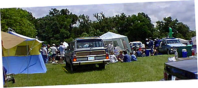
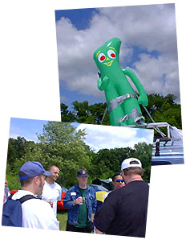
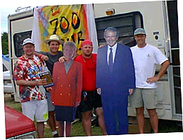
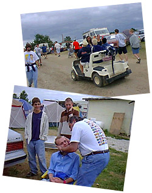
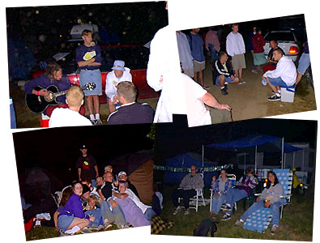
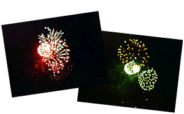

|
 |
 |
| Cornerstone: Welcome!
Day 3: Fireworks!
It's more than a music party -- Tucked behind the underground tent is Cornerstone's ArtRageous and Imaginarium exhibits. Authors, painters, and others of a creative bent can enjoy conferences, discussion, and great coffee. The midnight film festival was cool, too...
So much music, so little time... Sob! Here's a peek at some of the cool stuff I stumbled across over the course of the festival. Some oldies and some fresh stuff -- no matter what the genre, it's hot stuff.
Follow the adventures of Squeaky the Duck on his adventures at the fest. From his near-death experience at the hands of Kevin131 to a DC Talk sighting, he's been almost everywhere.
Well, T-shirts, too. Cornerstone is a great place to find a variety of wacky hairstyles, and most of the owners are good natured sorts who're quite willing to offer their coifs for a good cause -- this page, for one!
What do you get when you put a bunch of music-obsessed usenet junkies in one place? Vibrating hairrushes. That's what. The fourth annual RMC Cornerstone picnic is here, captured in bits and bytes for all of posterity...
Whether it's beating the heat, finding munchies, or selecting that perfect camping site, there's someone who's been through it and has some words of wisdom to offer. Recorded here for posterity are essential Cornerstone survival skills.
|

The fourth of July was upon us -- the apex of the fest, and the day of the Cornerstone RMC barbecue. Jason and I split up after we arrived at the fest grounds, and I trekked off in search of the homing beacon for the picnic. What beacon you ask? One that serves not only as a quick and easy landmark, but as a picture ofthe strangeness of the picnic's revelers as well: A giant inflatable Gumby doll, duct-taped to the roof of a van. Upon seeing it the day before, Jason had dubbed it 'Gumby in the Sky With Diamonds.' I found it in no time, nestled behind the Encore stage amidst a collection of cars, tents, and Lemon-Shake-Up crazed music fans. We had a great time catching up, and meeting each other in person. There was gratuitous use of Vegemite, the Austrailian vegetable goo, and other fun antics. There's a full account of the picnic After things wound down there, I headed off to wander and perhaps hook up with Jason again. Crossed paths with some interesting folks and caught bits of some fun concerts. Most interesting, though, was what I found tucked out of the way in the campgrounds behind the Artrageous tents: a van with a giant tie-dyed '700 Club' banner draped over the side. Unable to escape the delicious irony of a 700 Club van in a fest full of hard music and punks, I wandered over and introduced myself to the guys milling around there. Twenty minutes later I had a few new friends -- a camera crew from the show. We swapped stories about digital cameras and cool music around the fest, and I discovered that they were indivuals of the 'subversively hip' variety. They had convinced the 700 Club that Cornerstone would make a great subject for a news story, and were camping out and soaking in shows, interviewing artists and fest-goers. They were great sports when I suggested getting footage of Pat Robertson crowd surfing; I got a photo of them posing with life-sized cutouts of Pat Robertson and Terri, the 700 Club's co-host. Definitely one of the most surreal experiences of C-stone. The next day, I would learn that they managed to get footage of the cutout of Pat on the rock-climbing wall... We bummed around and caught the last end of a cool progressive rock show, then swung by the exhibition tent where all the artists, t-shirt hawkers, and other merchants were selling their wares. Brian Scroggins, of the acid techno group Prophecy of PANIC, was mixing up new songs for Saturday night's rave with his equipment right there in one corner of the tent! A small crowd had gathered, jamming and dancing around to the evolving beat loops. Tres cool. After a while, we all parted ways; I was drawn by the sound of more great techno from one of the tables. M&M Productions was hawking the last hundred copies of Cloud 2 Ground, a relatively unknown techno group just signed onto the N*Soul label. Lo and behold! Not only was C2G great stuff, they were listed on the lineup for Saturday night's rave. I snagged a copy pronto. After a bit more wandering, I hopped a golf cart back to camp to meet up with Jason, Ben, Kellen, and the rest of the gang. We hung around and discussed the shows we'd seen. After a few days of festing, most of us were suffering from various aches and sore muscles; Mister D, a family friend and attender of the fest, happens to be a chiropractor. Voila! A chair was found, and everyone received an impromptu 'adjustment.' It's interesting the stares that people give when they hear a loud 'snap' from the general direction of your neck... We all chatted, grabbed some food, and generally caught up on the day's events. I evangelized about the new Cloud 2 Ground CD I'd snagged, and anticipation of Saturday night's rave jumped a few notches as we listened to it on Jason's portable boom box. Night soon fell, and everyone drifted off to find their own entertainment of choice. Along the path to the main stage that night, I ran into a group of musicians hanging out, jamming, and generally having a good time of it as a small crowd gathered. I took a seat with the rest of the folks there and enjoyed myself for a while, talking to them about the msuci they were working on and their plans for the rest of the fest.  With only an hour or so to go before the fireworks started, I parted company and continued my trek to the lake where the yearly fireworks pop off. I crossed paths again with Jason and Beck, and we met up with various interesting folks, including some Bushnell natives with a fondness for Mountain Dew. Finally at midnight, the thundering pop-pop of the fourth of July show could be heard, and we watched the display before calling it a night.  |
|
|
|